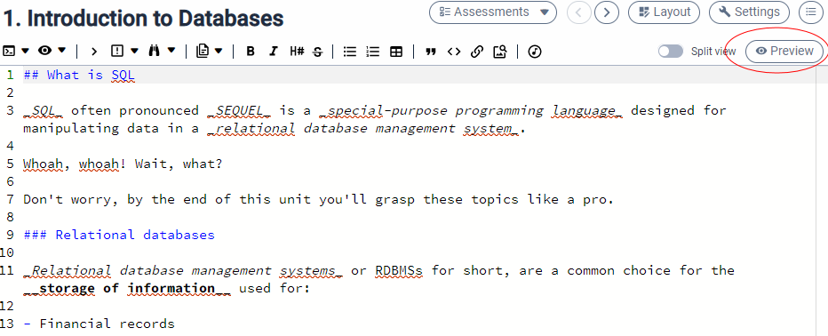
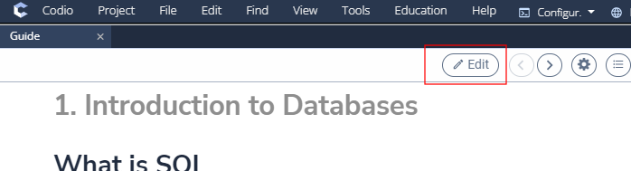
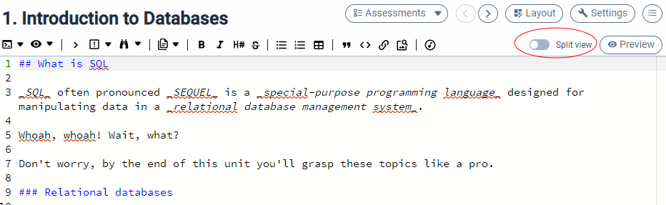

Previewing content¶
Preview mode¶
You can switch from editing your page content to previewing it as users will see it. To do this press the preview button in the top right of the content window. When the guide renders, it will open at the page you were editing.

To return to the edit mode, press the Editor button and you will return to edit mode on the same page.

Split screen¶
You can switch layout mode to split view mode by selecting the 2nd from left button in the header bar. Split view allows you to see the edit text and the rendered text side by side.

Play¶
You can start the Guide player from the Tools->Guide->Play menu or selecting the ‘>’ icon in the file tree